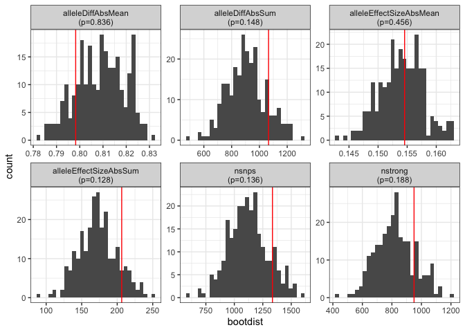

The goal of tfboot is to facilitate statistical analysis of SNPs disrupting transcription factor binding sites (TFBS) using bootstrapping resampling to create empirical null distributions.
Installation
You can install tfboot from GitHub with the code below. To install only tfboot:
# install.packages("devtools")
devtools::install_github("colossal-compsci/tfboot")To install required and suggested packages, including motifbreakR and those needed to build the vignette:
# install.packages("devtools")
devtools::install_github("colossal-compsci/tfboot",
build_vignettes = TRUE,
dependencies = c("Imports", "Suggests"))See the pkgdown documentation for an introductory vignette and function documentation.
Example
Let’s use an example from the vignette. First, let’s load some pre-baked motifbreakR results. mbres is a set of motifbreakR results run on SNPs in the 5kb promoter region of a random selection of 5 genes. mball is the precomputed set of motifbreakR results run on SNPs in the promoter region of all genes.
mbres <- vignettedata$mbres
mbres
#> # A tibble: 1,335 × 10
#> gene_id SNP_id tf pctRef pctAlt scoreRef scoreAlt effect alleleDiff alleleEffectSize
#> <chr> <chr> <chr> <dbl> <dbl> <dbl> <dbl> <chr> <dbl> <dbl>
#> 1 100316005 chr33:7472152_G/C ACE2 0.986 0.783 4.85 3.87 strong -0.980 -0.199
#> 2 100316005 chr33:7472176_T/G ADR1 0.759 0.917 3.34 4.01 weak 0.673 0.154
#> 3 100316005 chr33:7471139_A/C AFT2 0.964 0.878 5.50 5.02 weak -0.480 -0.0843
#> 4 100316005 chr33:7472176_T/G AFT2 0.902 0.740 5.15 4.24 strong -0.911 -0.160
#> 5 100316005 chr33:7473834_G/T AFT2 0.879 0.705 5.02 4.04 strong -0.980 -0.172
#> 6 100316005 chr33:7472152_G/C AGL42 0.859 0.693 5.14 4.15 strong -0.986 -0.165
#> 7 100316005 chr33:7471139_A/C AGL55 0.695 0.861 3.97 4.91 strong 0.939 0.165
#> 8 100316005 chr33:7472830_A/T ALX3 0.972 0.776 4.23 3.43 strong -0.806 -0.185
#> 9 100316005 chr33:7473857_T/C ALX3 0.919 0.773 4.02 3.42 weak -0.600 -0.138
#> 10 100316005 chr33:7473583_G/A ARG80 0.731 0.961 3.16 4.15 strong 0.993 0.230
#> # ℹ 1,325 more rows
mball <- vignettedata$mball
mball
#> # A tibble: 12,689 × 10
#> gene_id SNP_id tf pctRef pctAlt scoreRef scoreAlt effect alleleDiff alleleEffectSize
#> <chr> <chr> <chr> <dbl> <dbl> <dbl> <dbl> <chr> <dbl> <dbl>
#> 1 100315917 chr33:5706617_C/T ARG80 0.979 0.749 4.23 3.24 strong -0.993 -0.230
#> 2 100315917 chr33:5706617_C/T ARG81 0.991 0.825 5.89 4.90 strong -0.982 -0.165
#> 3 100315917 chr33:5703167_G/T ARGFX 0.781 0.889 5.06 5.74 weak 0.677 0.105
#> 4 100315917 chr33:5706617_C/T ARR1 0.634 0.880 2.53 3.42 strong 0.892 0.231
#> 5 100315917 chr33:5707492_C/T AT1G19040 0.882 0.779 7.60 6.73 strong -0.861 -0.100
#> 6 100315917 chr33:5704406_C/G AT3G46070 0.784 0.892 5.13 5.79 weak 0.666 0.103
#> 7 100315917 chr33:5706617_C/T ATHB-12 0.781 0.890 4.12 4.67 weak 0.552 0.106
#> 8 100315917 chr33:5706617_C/T ATHB-13 0.721 0.868 4.98 5.98 strong 0.993 0.145
#> 9 100315917 chr33:5706617_C/T ATHB-16 0.813 0.966 5.32 6.32 strong 0.998 0.153
#> 10 100315917 chr33:5706617_C/T ATHB-4 0.778 0.931 4.98 5.94 strong 0.963 0.151
#> # ℹ 12,679 more rowsSummarize motifbreakR results on our 5 genes of interest. This shows us the actual values for the number of SNPs in the upstream regions of these genes, and summary statistics on the allele differences, effect sizes, etc. See the vignette and ?mb_summarize for details.
mbsmry <- mb_summarize(mbres)
mbsmry
#> # A tibble: 1 × 7
#> ngenes nsnps nstrong alleleDiffAbsMean alleleDiffAbsSum alleleEffectSizeAbsMean alleleEffectSizeAbsSum
#> <int> <int> <int> <dbl> <dbl> <dbl> <dbl>
#> 1 5 1335 950 0.798 1066. 0.155 206.Bootstrap resample motifbreakR results for all genes. Resample sets of 5 genes 250 times.
set.seed(42)
mbboot <- mb_bootstrap(mball, ngenes=5, boots = 250)
mbboot$bootwide
#> # A tibble: 250 × 9
#> boot genes ngenes nsnps nstrong alleleDiffAbsMean alleleDiffAbsSum alleleEffectSizeAbsMean alleleEffectSizeAbsSum
#> <int> <chr> <int> <int> <int> <dbl> <dbl> <dbl> <dbl>
#> 1 1 431304;426469;100315917;396544;374124 5 1062 750 0.797 847. 0.155 164.
#> 2 2 426183;395959;431304;429501;396170 5 1244 914 0.808 1005. 0.157 195.
#> 3 3 102465361;426183;396544;426469;429172 5 886 655 0.812 720. 0.149 132.
#> 4 4 396007;407779;693245;429501;100498692 5 1514 1139 0.815 1234. 0.153 232.
#> 5 5 426883;396544;408041;426183;426469 5 925 623 0.787 728. 0.147 136.
#> 6 6 425059;429035;100529062;396007;425613 5 1350 1026 0.821 1109. 0.155 209.
#> 7 7 408042;426880;100498692;425499;426885 5 823 627 0.823 677. 0.157 129.
#> 8 8 396170;425058;426886;395587;396045 5 1262 910 0.805 1016. 0.147 185.
#> 9 9 102466833;426183;100529061;396045;395959 5 1263 963 0.822 1038. 0.153 193.
#> 10 10 429035;408042;100529062;100529061;425613 5 1289 987 0.823 1061. 0.154 198.
#> # ℹ 240 more rows
mbboot$bootdist
#> # A tibble: 6 × 2
#> metric bootdist
#> <chr> <list>
#> 1 alleleDiffAbsMean <dbl [250]>
#> 2 alleleDiffAbsSum <dbl [250]>
#> 3 alleleEffectSizeAbsMean <dbl [250]>
#> 4 alleleEffectSizeAbsSum <dbl [250]>
#> 5 nsnps <dbl [250]>
#> 6 nstrong <dbl [250]>Compare the values from our five genes of interest to the empirical null distribution from bootstrap resampling.
bootstats <- mb_bootstats(mbsmry, mbboot)
bootstats
#> # A tibble: 6 × 5
#> metric stat bootdist bootmax p
#> <chr> <dbl> <list> <dbl> <dbl>
#> 1 nsnps 1335 <dbl [250]> 1597 0.136
#> 2 nstrong 950 <dbl [250]> 1210 0.188
#> 3 alleleDiffAbsMean 0.798 <dbl [250]> 0.831 0.836
#> 4 alleleDiffAbsSum 1066. <dbl [250]> 1304. 0.148
#> 5 alleleEffectSizeAbsMean 0.155 <dbl [250]> 0.163 0.456
#> 6 alleleEffectSizeAbsSum 206. <dbl [250]> 251. 0.128Visualize the results:
plot_bootstats(bootstats)
See vignette("intro", package="tfboot") or the articles on the pkgdown documentation website for more.